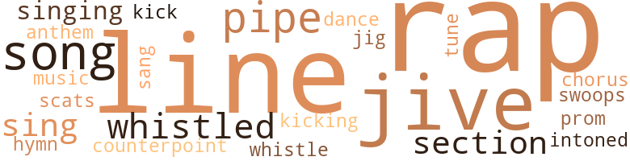
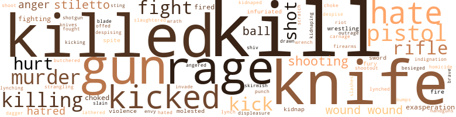

47 music-related terms matched in this text.
Most frequent terms in this topic: jive (4); Rap (3); line (3); pipe (3); rap (3)

chorus.n.01
Definition: any utterance produced simultaneously by a group
| word |
sentence |
| chorus |
The group jeered , groaned and applauded in a kind of chorus . |
counterpoint.n.01
Definition: a musical form involving the simultaneous sound of two or more melodies
| word |
sentence |
| counterpoint |
It ran like a counterpoint in his mind . |
dance.n.01
Definition: an artistic form of nonverbal communication
| word |
sentence |
| dance |
Then his six men started a dance of their own that ended when they hit the ground where some of them went on dancing . |
hymn.n.01
Definition: a song of praise (to God or to a saint or to a nation)
| word |
sentence |
| hymn |
From the distance came the sounds of a down-home hallelujah-shouting congregation having a soul - revival hymn sing . |
| anthem |
And Jimmy Weldon had written the Negro National Anthem , which everybody laughed at because how in hell can a goddamn nigger have a national anthem ? |
jig.n.01
Definition: music in three-four time for dancing a jig
| word |
sentence |
| jig |
Sonny was walking , but then he stopped walking and did a little jig - and that made sense because a lot of bullets were hitting him in rapid order . |
kick.v.04
Definition: kick a leg up
| word |
sentence |
| kick |
" They never kick ! |
| kicking |
So he 's got ta keep on kicking everybody in the asshole so he will finally be able to get it up . |
music.n.01
Definition: an artistic form of auditory communication incorporating instrumental or vocal tones in a structured and continuous manner
| word |
sentence |
| music |
When the music stopped , the girl came to Giveadamn and put out her hand . |
pipe.n.04
Definition: a tubular wind instrument
| word |
sentence |
| pipe |
There was an iron pipe imbedded in the roof . |
| pipe |
It was some - body 's excuse for an exhaust pipe for his whiskey still . |
| pipe |
She told Toni to lie down with both arms hugging the pipe . |
promenade.n.01
Definition: a formal ball held for a school class toward the end of the academic year
| word |
sentence |
| prom |
It was like a prom - ise that she was going to die in beauty . |
rap.n.05
Definition: genre of African-American music of the 1980s and 1990s in which rhyming lyrics are chanted to a musical accompaniment; several forms of rap have emerged
| word |
sentence |
| rap |
Harry Brown could have set this up with the idea that she would now face a murder rap . |
| raps |
He had just said " hooked " when they both heard the first of three light raps on the door . |
| rap |
He 's just clearing the decks for his getaway from a homicide rap . |
| rap |
Ossie gave a quick discreet rap on the door , then pushed it ajar . |
| Rap |
" You know what happened to Rap Brown , " Freddy said slowly , feeling his way . |
| Rap |
They could n't have done it if Rap was smart . " |
| Rap |
" Rap was smart . " |
scat.n.01
Definition: singing jazz; the singer substitutes nonsense syllables for the words of the song and tries to sound like a musical instrument
| word |
sentence |
| scats |
Ninety - eight was enough scats anyhow . |
section.n.01
Definition: a self-contained part of a larger composition (written or musical)
| word |
sentence |
| section |
Deep Freeze had not been too rough , so during the ride uptown to the Riverdale section of the Bronx , Deep Freeze made a change in plans . |
| section |
It seemed no time at all before they were in Riverdale , a section of New York totally unfamiliar to Toni . |
sing.v.02
Definition: produce tones with the voice
| word |
sentence |
| sing |
She remembered one of those crazy songs the church niggers used to sing in the storefronts down the street where she had once lived . |
| sang |
And so they gathered together in their little punchy church and sang and shouted and beat their goddamn drums as if the noise itself would scare away sin and hard times . |
| sing |
From the distance came the sounds of a down-home hallelujah-shouting congregation having a soul - revival hymn sing . |
singing.n.01
Definition: the act of singing vocal music
| word |
sentence |
| singing |
" Seems like they should be singing One More River To Cross ' ' Coming out of the alley , Giveadamn was staggering . |
| singing |
The singing of the revival meeting was clearer now . |
song.n.01
Definition: a short musical composition with words
| word |
sentence |
| songs |
That girl could have made the top ten songs with lots of dudes I know . |
| songs |
She remembered one of those crazy songs the church niggers used to sing in the storefronts down the street where she had once lived . |
| song |
But the punch drunks in that church had this song that was crazier than all the rest : " The Blood Done Sing My Name " ! |
| song |
The song and the shouted words of the jackleg preacher formed a fitting background for all this crap , Connie decided . |
swing.n.05
Definition: a style of jazz played by big bands popular in the 1930s; flowing rhythms but less complex than later styles of jazz
| word |
sentence |
| jive |
Giveadamn took a deep breath and went on , " Well , the old cracker of a conductor is used to these kind of jive plays and he is bored . |
| jive |
Punched out by all the jive that went down around them . |
| jive |
" It 's pure dee jive . |
| jive |
The jive was humming . |
swoop.n.01
Definition: (music) rapid sliding up or down the musical scale
| word |
sentence |
| swoops |
She let them come up behind her , then made one of her daring swoops to the left , holding onto the wheel in a grip that never shook or wavered . |
tone.v.01
Definition: utter monotonously and repetitively and rhythmically
| word |
sentence |
| intoned |
" Mene , Mene , Tekel Upharsin ! " he intoned . |
tune.n.01
Definition: a succession of notes forming a distinctive sequence
| word |
sentence |
| tune |
The slag , the driftwood , the grifters , and the scum would all come by to grin , bow , shuffle their feet and try to find out what tune Harry was willing to pay money to hear today . |
| lines |
There were deep frown lines between his eyebrows , set there over his lifetime . |
| lines |
He 'd heard those lines on TV . |
| line |
Ossie said , " When they hit that bus , I think they knocked the front end out of line . |
| line |
Once at the foul line , he began practicing free throws . |
| line |
He went back to the foul line , studied the basket and from a one-handed push , the ball arced up and swished through the net . |
whistle.v.01
Definition: make whistling sounds
| word |
sentence |
| whistled |
They passed a book-lined room and Giveadamn almost whistled . |
| whistle |
He even began to whistle ns he lathered his face , then he remembered Margo and glanced back at the bed . |
| whistled |
Harry whistled . |
311 violence-related terms matched in this text.
Most frequent terms in this topic: kill (39); knife (26); killed (25); rage (13); kicked (11)

abrasion.n.01
Definition: an abraded area where the skin is torn or worn off
| word |
sentence |
| scratch |
Up from scratch . " |
aggravation.n.01
Definition: an exasperated feeling of annoyance
| word |
sentence |
| exasperation |
Foxy heaved a sigh of exasperation and began to fumble in her purse . |
| exasperation |
She did not bother to hide her exasperation . |
| exasperation |
Once in exasperation Ossie labeled all these sexy young dolls " heroin widows . " |
anger.n.01
Definition: a strong emotion; a feeling that is oriented toward some real or supposed grievance
| word |
sentence |
| anger |
Foxy shrugged and then shivered her shoulders in anger . |
| anger |
Studs 's eyes narrowed and deepened with anger . |
| anger |
He spread his arms in a gesture of anger . |
| anger |
She stood with arms akimbo now and directed her anger at Connie . |
anger.v.02
Definition: become angry
| word |
sentence |
| angered |
Then she laughed , a lighthearted sound that both surprised Margo and angered her . |
besiege.v.01
Definition: surround so as to force to give up
| word |
sentence |
| besieged |
Truths like that were especially hard when they were all living in this apartment as if it were a besieged fort . |
brush.n.06
Definition: a minor short-term fight
| word |
sentence |
| skirmish |
The part of the action that Francis Williams held had been swallowed up in a bloody skirmish . |
bump.n.01
Definition: a lump on the body caused by a blow
| word |
sentence |
| bumps |
She held steady and knew the Rolls , a heavier car than theirs , was taking the bumps better . |
butcher.v.01
Definition: kill (animals) usually for food consumption
| word |
sentence |
| butchered |
Foxy had not butchered the boy Harlem style . |
| slaughtered |
He was forty-three , the first and oldest of the young turks who slaughtered their way to the top of the heroin racket in the many ghettos of New York and Queens . |
contemn.v.01
Definition: look down on with disdain
| word |
sentence |
| despising |
Like what you and Foxy forget is I 'm a country boy who was born despising dope fiends . |
| despise |
Later on , he learned that the family that prays together eventually comes to despise each other . |
cut.n.05
Definition: a wound made by cutting
| word |
sentence |
| slashes |
Her knife came out and she went to Toni , moved around her with quick savage slashes and pared the clothes from Toni 's body . |
dagger.n.01
Definition: a short knife with a pointed blade used for piercing or stabbing
| word |
sentence |
| dagger |
Margo came off the bed with a shriek and rushed at Giveadamn with a dagger like the one already stuck in his gut . |
displeasure.n.01
Definition: the feeling of being displeased or annoyed or dissatisfied with someone or something
| word |
sentence |
| displeasure |
She looked at him with displeasure . |
draw.v.23
Definition: pull (a person) apart with four horses tied to his extremities, so as to execute him
| word |
sentence |
| drawn |
He had carefully drawn up the knees of his trousers to protect their crease . |
envy.n.01
Definition: a feeling of grudging admiration and desire to have something that is possessed by another
| word |
sentence |
| envy |
There was a touch of envy in her smile of appraisal and congratulations . |
fight.n.02
Definition: the act of fighting; any contest or struggle
| word |
sentence |
| fighting |
That 's all he could remember : her fighting for breath . |
fight.n.05
Definition: a boxing or wrestling match
| word |
sentence |
| fights |
" Some go down there to pick fights with the whiteys all day long . |
fight.v.02
Definition: fight against or resist strongly
| word |
sentence |
| fighting |
But people are fighting and dying for dreams every day all over Harlem , all the time . |
| fight |
But she did not exactly fight . |
| fight |
But she did not exactly fight . |
| fight |
She knew she would not have to fight . |
| fight |
The only way women know how to fight is dirty . |
| fight |
And the two of them fight like cats and dogs . |
| fight |
If Ossie did not fight , if he turned over all Harry 's narco assets and secrets , then Ossie was a pussy . |
| fighting |
I know he does n't like slick-headed niggers , but it would n't seem like fighting fair now . " |
| fought |
Toni grabbed the nearest girl and got her out , but it was n't easy , The girl kicked and fought Connie went over the seat to help . |
firearm.n.01
Definition: a portable gun
| word |
sentence |
| firearms |
Tall , straight and thin , Jimmy inspired thoughts of well-honed razors rather than firearms . |
flog.v.01
Definition: beat severely with a whip or rod
| word |
sentence |
| lathered |
He even began to whistle ns he lathered his face , then he remembered Margo and glanced back at the bed . |
fury.n.01
Definition: a feeling of intense anger
| word |
sentence |
| rage |
Sonny 's crack about coming around for a payoff had him in a rage he had n't been able to work off . |
| fury |
Doll Baby turned in fury to the handsome youth sitting in front of him . |
| rage |
Harry 's rage increased . |
| rage |
Foxy 's sherry-brown features shifted from solemnity to rage . |
| rage |
Even though he had gone to bed in a rage , Harry awoke on Satur - day morning from a sound and dreamless sleep . |
| fury |
She took a deep breath , the better to express her fury , but she was thinking about what he 'd said , and then she nodded . |
| Rage |
Rage saved Harry 's mind in the days that followed . |
| rage |
He was furious , but he believed rage was exactly what she wanted , so he cooled it and said , " I never bought a woman in my life and I do n't intend to start now . " |
| rages |
Boots was working herself up into the finest of rages , and when she ran out of invective she jumped into Connie 's car and sat there like an ebony fixture . |
| rage |
The sound from Margo was rage . |
| rage |
Studs was running toward them both , a look of rage on her face . |
| rage |
Neither she nor Connie had figured the illiterate Doll would go into a rage when confronted with handwriting . |
| rage |
Ossie was in a rage . |
| rage |
He ai n't just gon na act out his rage no more . |
| rage |
The van showered glass along with Doll Baby 's final cry of rage . |
| rage |
Harry was , too , with rage and disappointment . |
gag.v.06
Definition: cause to retch or choke
| word |
sentence |
| choke |
She landed astride Toni and began to choke the child , at the same time banging her head on the floor . |
| choked |
It hit him that Toni was in danger of being choked to death . |
| choked |
Her lips were swollen , but it was the dryness in her mouth that choked her . |
| choked |
The pain was so great she choked when she tried to scream . |
gun.n.01
Definition: a weapon that discharges a missile at high velocity (especially from a metal tube or barrel)
| word |
sentence |
| gun |
Then he pointed the gun at the boy behind the wheel . |
| gun |
He watched Harry point the gun at the Mercedes ' front tires and shoot . |
| gun |
The cops thought that even the craziest of niggers could be controlled by a white man in a uniform and a gun in his holster . |
| guns |
Both boys had their hands on guns stuck in their waistbands . |
| gun |
Then he put the gun in his waistband . |
| gun |
Resting on his elbows , with both hands he raised the big gun and began to fire at the wind - shield of the Jaguar coming straight at them . |
| gun |
Fools mistook his smile as a sign of truce and were comforted , but Jimmy smiled best when he had a gun in your back . |
| guns |
I just want you nearby with lots of guns to be sure it 's all run proper . |
| guns |
and grinned , her nipples standing out like turret guns . |
| gun |
Anyone could step into the middle of the street and shoot around for fifteen minutes with a machine gun , and nobody would even know it , much less care . |
| gun |
On their way out through the big double kitchen doors , Ossie slipped a silencer on his gun and shot the locks off the doors . |
| guns |
" You just get the bread and get the guns and get the cars . |
| guns |
How many guns you got anyhow ? " |
| guns |
If any guns were firing , it was hard to tell , and if anyone was shooting at Toni , she did n't care . |
| gun |
Every gun on the street grew silent , cops and black killers alike . |
| gun |
" All the papers is gon na print is that an unidentified black madman was slain in a running gun battle with a whole slew of heroic cops . |
| gun |
Francis stood there with a gun in his hand pointed toward the men on the floor who had been watching without a word , their hopes obviously riding on Harry . |
gunfight.n.01
Definition: a fight involving shooting small arms with the intent to kill or frighten
| word |
sentence |
| shootout |
Ten minutes later Harry was in a shootout . |
hate.n.01
Definition: the emotion of intense dislike; a feeling of dislike so strong that it demands action
| word |
sentence |
| hatred |
Now her eyes held hatred , but he went on : " You and I got workhorse minds . |
| hate |
" How can a sonofabitch sell narco and hate junkies like that man does ? " |
| hatred |
But from that time on , he thought he could discern much more hatred in Harry for Margo , and much , much more respect . |
| hatred |
Her dark eyes drove hatred into his . |
| hatred |
And then she shed her hatred like a dirty pair of drawers , and her smile was tough , rugged . |
hate.v.01
Definition: dislike intensely; feel antipathy or aversion towards
| word |
sentence |
| hates |
The way it goes is Harry hates all junkies , even ex-junkies , and I ai n't sure she ai n't still using . |
| hate |
" Let me ex - plain something , Lawrence - I hate junkies ! |
| hate |
He do n't hate the human race when he 's high . |
| hated |
He came riding a bus into a tiny nation called Harlem , which was addicted to the quest for the finest golden fleece the world shall ever know , and he lived a clean life to the very end , an easygoing young man who feared God and hated violence . |
| hates |
She hates men . |
| hates |
" Because Studs , that , stupid bitch , is jealous of her , hates her just because she 's smart , wo n't let her get any credit . |
| hates |
He hates Jose now because I went on dope . |
| hate |
" I hate faggots ! " the Doll hollered . |
| hate |
It just so happens I hate men who try to be girls all the time . |
| hate |
He did not hate people . |
homicide.n.01
Definition: the killing of a human being by another human being
| word |
sentence |
| homicide |
He 's just clearing the decks for his getaway from a homicide rap . |
indignation.n.01
Definition: a feeling of righteous anger
| word |
sentence |
| outrage |
Her expression was the same , but her eyes glared with outrage . |
| indignation |
She feigned indignation and struck at him with the side of her fist . |
infuriate.v.01
Definition: make furious
| word |
sentence |
| infuriated |
It was the accent that infuriated Margo the most . |
| infuriated |
His airiness infuriated Harry . |
invade.v.01
Definition: march aggressively into another's territory by military force for the purposes of conquest and occupation
| word |
sentence |
| invade |
He thought he was going to invade this one ex-junkie 's world and render it asunder . |
kick.v.04
Definition: kick a leg up
| word |
sentence |
| kick |
" They never kick ! |
| kicking |
So he 's got ta keep on kicking everybody in the asshole so he will finally be able to get it up . |
kick_back.v.02
Definition: spring back, as from a forceful thrust
| word |
sentence |
| kicked |
The tall girl kicked a hassock toward Giveadamn and sat on it . |
| kicked |
The crazy mother-fuckers tried to bury his motorcycle with him , and when the undertaker started a hassle they kicked the living shit outa him and threw him in the hole on top of the coffin . |
| kicks |
" Harry Brown kicks junkies ' asses . " |
| kicks |
" Just what I said : Harry Brown kicks junkies ' asses . |
| kicked |
" I kicked . " |
| kicked |
" I 've been getting kicked in the teeth right regularly for the past ten days , " he said gruffly . |
| kicks |
And Connie could imagine how Boots would get her kicks out of driving on this ferry every evening after work and just sit - ting cool , calm and collected while all the whiteys stared at her and wondered if maybe she was Diana Ross or somebody . |
| kick |
Oh hell , Margo . . . Studs has been looking for a good chance to kick my ass out of there for about a year now . " |
| kick |
" If you use that word one more time , I 'll kick your simple ass . " |
| kicked |
Harry went to the door and kicked gently with the toe of his shoe . |
| kicked |
" She just kicked and is still full of remorse , Ossie , even if she do n't show it . |
| kicked |
He kicked back viciously at her legs . |
| kicked |
But still . . . " She stopped and kicked of ! |
| kicked |
Brown 's boy and his crowd gets the eight million the bidders have kicked in , minus two million put up by top bidder . |
| kick |
" Toni , " Connie said , " kick one of those whores outa here . |
| kicked |
Toni grabbed the nearest girl and got her out , but it was n't easy , The girl kicked and fought Connie went over the seat to help . |
| kicked |
Connie was driving an even fifty . . . then she kicked the accelerator . |
kidnap.v.01
Definition: take away to an undisclosed location against their will and usually in order to extract a ransom
| word |
sentence |
| kidnaped |
His son is tak - ing over or Harry Brown would not risk having his son kidnaped by suddenly announcing out of the blue he has found himself a son . |
| kidnaping |
It had never occurred to him black people would ever get so far up in the world that one of their wor - ries would be kidnaping . |
| kidnap |
We kidnap the machine and we kidnap the man Harry got to run the ma - chine . |
| kidnap |
We kidnap the machine and we kidnap the man Harry got to run the ma - chine . |
kill.v.10
Definition: cause the death of, without intention
| word |
sentence |
| killing |
And once you do , you should come within an inch of jail before you stop killing them . " |
| killed |
A junkie is an ani - mal who is best killed on sight . |
| killed |
Like one time one got killed on his bike . |
| kill |
" I told her I would kill her if she ever did again . |
| killed |
I almost killed her once before . " |
| killing |
Then she said wonderingly , " Everybody talks about how meth is killing more and more people every day , but nobody realizes how many of you ' ho 's die from the wine you buy with the bread you get from selling your damn meth . |
| kill |
That damned wine will kill a damned sight quicker than either meth or narco . " |
| kill |
" I 'm going to kill you , Kiki . " |
| kill |
" You might kill the girl . " |
| kill |
That I would kill her ? " |
| killed |
" Yes . . . have her killed ... if it makes any difference . " |
| killed |
I killed rabbits on the run . " |
| killed |
She has killed , but not for money , far as I know . |
| kill |
Finally she said , " You 'll have to kill me to change what I said Friday night . " |
| kill |
" They would kill you , " Ossie said flatly . |
| killed |
" What I mean is , " Sparks said , " you give me a quick-tempered driver , a dude who suddenly steps on the gas to cut in and out real fast to pass some stupid dude or dame , and I 'll show you a mother that can get hisself killed in no time flat . |
| kill |
And whenever he cries , he tries his best to kill somebody for making him cry . |
| kills |
He dresses well , kills well . |
| kills |
But she do n't argue with any , she kills them the moment they get on her nerves . |
| killed |
The first man she killed was when she was thirteen . |
| killing |
Studs ca n't even count money and yet she 's always killing somebody over money . |
| kill |
One of these days Connie is going to kill that Studs and take over . |
| killing |
If his daring had been known , had been made legend , the police would never again rush in blind , killing first , asking questions later . |
| killed |
He did not know why he had not killed her personally . |
| kill |
Like a wounded man , he shouted , " If you ever go back on shit , I will kill you ! " |
| kill |
" Well , who did kill her ? " |
| killed |
They nodded as if they knew doll-faced little hep chicks like Margo always killed the men they loved and they had no intention of inter - fering . |
| kill |
If they ever came to believe you were clean , they would kill you out of contempt . |
| kill |
" And when they find out you have n't , they 'll kill you - like he said - out of contempt . " |
| kill |
Foxy was out to kill . |
| kill |
She was either going to kill Toni or she was going to kill somebody else . |
| kill |
She was either going to kill Toni or she was going to kill somebody else . |
| killed |
I killed a bitch for fucking with him one time . " |
| kill |
And I am going to make all these chumps who would gladly kill their baby sisters for a piece of pie-in-the-sky know who I am , Ossie . |
| killed |
" I think I killed Studs Thompson 's favorite con - cubine . |
| kill |
You only won - dered if he planned to kill you now or later . |
| killed |
The girls damned near killed her . |
| kill |
- but she was not one of those butches who would kill a girl for not wanting to . |
| kill |
" If he ai n't dead , I say kill him , but we do n't do any killing until we get facts . |
| kill |
" Now all these sonsofbitches who claim I do n't know how to read and write do n't seem to realize that the only problem is to kill Harry Brown and his nephew and Ossie . |
| killing |
If Jimmy Adams knew that Big Frank used to be Harry 's right - hand man , he also knew that killing Big Frank meant war . |
| killed |
Ossie would get killed as soon as the se - cret formula was in Adams ' hands . |
| killed |
" Doll killed the bartender and shook up half a dozen other girls in here . |
| kill |
" If I 'd got down on my knees like you did , everybody would have thought that goddamn Doll had a perfect right to kill me . |
| kill |
Somebody you ca n't kill again . |
| kill |
" We 'll kill him when it 's all over , " Freddy said . |
| kill |
Then he 'd kill her . |
| killed |
I know what killed Margo : she lost her cool . |
| killed |
He wished he had not killed her . |
| kill |
And then she added , " Just as if you did not have to kill her . " |
| killed |
Ossie said slowly , " While you were out with Giveadamn trying to get yourselves killed , I got a call from the police . " |
| kill |
Giveadamn , tell me something , why 'd you kill Studs ? " |
| killed |
I want to know if you are ready to admit you killed Studs because you maybe wanted to . |
| kill |
" You did n't kill for revenge or even in self-defense . |
| kill |
The real reason you kill someone is because they are creating a disturb - ance . " |
| killed |
After Connie left , Giveadamn doubled over with the pain he had felt coming when she asked him why he 'd killed Studs . |
| killed |
But what he said was , " I heard you killed Studs on that back road . |
| kill |
They would n't trust you ; they would have to kill you . " |
| kill |
Like she would want you to see first-hand how greed can kill a man ... or woman ... or child . |
| kill |
" Maybe we are dealing with killers , Ossie , " she said , crouching by the bar , " but even the craziest killers do not kill messen - gers . " |
| kill |
Let the snakes kill each other off . |
| kill |
He 's going to kill us . " |
| kill |
Connie picked up an ashtray like the one Boots had used to kill Ming Toy . |
| killed |
A fool could get killed for wanting less than he did . |
| kill |
These men often had to kill to get their bread . |
| kill |
" I 'm gon na kill him just the same , " Doll said stubbornly . |
| kill |
" But as soon as I get my hands on that Ossie Winbush , I 'm gon na kill him . |
| killed |
" A whole lot of people could get killed in this shit . " |
| killed |
" I think you 'd all rather be killed softly , gently , than get it the hard way with this car-stealing bitch at the wheel . " |
| killed |
It was like it was a greater honor to be killed by Sonny Roberts than to live , and he was ready to take on Harry himself and do him the honor . |
killing.n.01
Definition: an event that causes someone to die
| word |
sentence |
| killings |
Then he could wait and watch and see how things went as the killings got started . |
killing.n.02
Definition: the act of terminating a life
| word |
sentence |
| killing |
" If he ai n't dead , I say kill him , but we do n't do any killing until we get facts . |
| kill |
" You figger to sucker me in on the kill ? " |
| killing |
Too much threat of killing , he guessed , but a sickle-cell crisis was edging in on him . |
knife.n.02
Definition: a weapon with a handle and blade with a sharp point
| word |
sentence |
| knife |
Suddenly her knife was in her hand . |
| knife |
She thought maybe Kiki was too jacked up to buy another knife . |
| knife |
She tossed her knife on the bed and then stared at it , a stiletto she had carried for years . |
| knife |
She sighed and went to the bed and lay down beside the knife . |
| knives |
" The Electric Knife they called her , and electric knives had n't even been invented back then . " |
| knife |
Foxy went for her knife . |
| knife |
She feinted with her knife toward the woman 's eyes . |
| knife |
As her knife found its home in the woman 's heart , Margo felt the first waves of confusion . |
| knife |
Whoever had sent the woman had not told her there was always a knife on the person of her in - tended victim . |
| knife |
This drunk makes a sort of compliment to her mother and the kid sticks a knife in the man without even bothering to see if her mother knew him . |
| knife |
The knife had hit his spleen ! |
| knife |
Giveadamn looked down at the hilt of the knife and tried to convince himself it was really there . |
| knife |
Foxy 's knife was at Toni 's throat . |
| knife |
She hit Ranger on his neck with so stern a vengeance the knife seemed to rebound . |
| knife |
Foxy had flayed Ranger with the blade of her knife . |
| knife |
Her knife came out and she went to Toni , moved around her with quick savage slashes and pared the clothes from Toni 's body . |
| knife |
That knife went clear through his pancreas or damned near . |
| knife |
She was that little knife freak up there the same time as us . |
| knife |
Margo put her knife on the bar and said . |
| knife |
Foxy picked up the knife . |
| knife |
And now Margo 's knife was in her hand . |
| knife |
She threw the knife to the floor and leaped to grab Connie by the throat . |
| knife |
When he turned back , she had her knife in her hand . |
| knife |
The knife flashed high and then she was driving it in low . |
| knife |
And Margo 's knife was cutting a V across his stomach . |
| knife |
Connie leaned over , one arm extended , while Toni took a kind of jump shot toward her with the hilt of the knife up . |
| knife |
Using the knife and the wirecutters , Connie opened the First bag . |
lynch.v.01
Definition: kill without legal sanction
| word |
sentence |
| lynched |
" All Francis will say is we got to come up with his stash or we gon na have three cops lynched on TV . " |
| lynch |
Then he 's gon na throw down his state - ment to Melba Tolliver and while the cameras are turning he 's gon na lynch our men . " |
lynching.n.01
Definition: putting a person to death by mob action without due process of law
| word |
sentence |
| lynching |
But now when the pictures of the lynching were flashed on the screen , the police would immediately apologize for their lack of discretion for hav - ing nut a " potentially great " lieutenant in charge . |
malice.n.01
Definition: feeling a need to see others suffer
| word |
sentence |
| spite |
Giveadamn , as he knew , was bom to become a legend - though he was more or less an empty-headed fellow in spite of the high regard he had for his own intellect . |
| spite |
She never would , because Gracie believed all decent women picked out one man to love and made do with him in spite of hell . |
molest.v.01
Definition: harass or assault sexually; make indecent advances to
| word |
sentence |
| molested |
She could not be molested on the bed . |
| molested |
She could not be molested on the bed . |
murder.n.01
Definition: unlawful premeditated killing of a human being by a human being
| word |
sentence |
| murder |
Harry Brown could have set this up with the idea that she would now face a murder rap . |
| murder |
The junkies on the street believed Harry Brown had paid the police to murder Francis . |
| murder |
This first murder was a concrete declaration in that Jimmy Adams knew Ossie must avenge Big Frank 's death . |
| murder |
Connie always knew , even as a child , that the look was the face of a murder going someplace to happen . |
| murder |
In the crisis of Margo 's murder , Boots had retired into the kitchen . |
| Murder |
" Murder has nothing to do with the ghetto , " Connie said coldly . |
| Murder |
Murder belongs to everybody , Giveadamn . |
| murder |
They were skilled at thinking murder before they were weaned from the bottle . |
murder.v.01
Definition: kill intentionally and with premeditation
| word |
sentence |
| slain |
" All the papers is gon na print is that an unidentified black madman was slain in a running gun battle with a whole slew of heroic cops . |
| offed |
As the word got around that Francis Williams had been offed by the cops and Harry Brown , that fifteen kilos of heroin were still missing , there was lots of speculation . |
musket_ball.n.01
Definition: a solid projectile that is shot by a musket
| word |
sentence |
| ball |
And he was one long tall nigger who would have gone to college anyway , even if he could n't toss a ball in a bushel basket three feet away . |
| balls |
It 's the balls , boss . |
| balls |
Do n't you know the man 's gon na cut your tongue out before they even start to look for your balls ? |
| ball |
The boy then dribbled the ball all the way across the court to where the others were waiting . |
| ball |
He went back to the foul line , studied the basket and from a one-handed push , the ball arced up and swished through the net . |
open_fire.v.01
Definition: start firing a weapon
| word |
sentence |
| fired |
Giveadamn jerked out the pistol and fired carefully in the direc - tion of Studs 's feet . |
| fire |
Resting on his elbows , with both hands he raised the big gun and began to fire at the wind - shield of the Jaguar coming straight at them . |
| fired |
He fired four shots . |
| fires |
Then accidentally on purpose , one of your men fires a tracer bullet up there . |
| fired |
He saw the pellets of tear gas arc up and into the apartment but not who fired them . |
pain.v.02
Definition: cause emotional anguish or make miserable
| word |
sentence |
| hurt |
Stella was hurt ; Foxy got up and came to her . |
| hurt |
" Margo , he ca n't hurt me . |
| hurt |
And I ca n't have you wanting to hurt my wife after she takes your bread and leaves you broke . |
| hurt |
We say Harry ai n't hurt at all . |
| hurt |
Studs , I honest to God believe you 're going to get hurt if you fuck over Harry or his son . |
| hurt |
She could n't believe , riding high on her last fix , she 'd hurt her Ossie . |
pistol.n.01
Definition: a firearm that is held and fired with one hand
| word |
sentence |
| pistol |
" How good are you with a pistol ? " |
| pistol |
He reached in the unlocked glove compartment and took out an automatic German pistol . |
| pistol |
" You been going downtown with Ossie to the pistol range . |
| pistol |
Studs got off the floor and went to a sideboard and took out a huge Mauser automatic pistol . |
| pistol |
He reached inside his jacket and pulled out the huge pistol Ossie had given him . |
| pistol |
Giveadamn jerked out the pistol and fired carefully in the direc - tion of Studs 's feet . |
| pistol |
He raised the pistol with both hands and aimed directly for Studs 's eyes . |
| pistol |
Out of the corner of her eye she saw him pull out the pistol and refill the magazine . |
| pistol |
She thought of asking Ossie for his pistol , but decided against it . |
| pistol |
He had stuffed both his coat pockets with gre - nades and was checking his pistol . |
| handguns |
There were also nine high-powered rifles in the car and two handguns . |
punch.n.01
Definition: (boxing) a blow with the fist
| word |
sentence |
| punch |
But the punch drunks in that church had this song that was crazier than all the rest : " The Blood Done Sing My Name " ! |
rage.n.04
Definition: violent state of the elements
| word |
sentence |
| rage |
He was suddenly too weak to feel either rage or fear . |
rifle.n.01
Definition: a shoulder firearm with a long barrel and a rifled bore
| word |
sentence |
| rifles |
There were also nine high-powered rifles in the car and two handguns . |
| rifles |
He came halfway over the seatback to grab for one of the rifles a youth had lying across his lap . |
| rifle |
Finally Doll Baby relaxed and gave a huge mournful sigh and let go of the rifle . |
| rifles |
A cluster of men was moving along beside Doll , and they all had rifles . |
| rifle |
Then she heard what she 'd been waiting for - a lot of rapid fire off in the distance , ft sounded a little too rapid , with too many kinds of explosions , for automatic rifle fire . |
| rifles |
They stood on the back of the flatbed gazing around them , big-eyed and half-paralyzed , their rifles gone , lost on the wild ride . |
| rifle |
He wanted to see which one heisted the rifle . |
riot.n.01
Definition: a public act of violence by an unruly mob
| word |
sentence |
| riot |
It was damned near a riot out there on Staten Is - land . |
shiv.n.01
Definition: a knife used as a weapon
| word |
sentence |
| shiv |
" Give me your shiv . " |
shoot.v.02
Definition: kill by firing a missile
| word |
sentence |
| shot |
She shot him a glance of contempt . |
| shot |
She had never seen or heard of a man get off like that , but she knew he had shot his load . |
| shot |
She had never seen or heard of a man get off like that , but she knew he had shot his load . |
| shot |
" You shot his tires out and you do n't think he 's mad ? |
| shot |
They went skidding around onto 115th Street , then shot west until they came to Fifth Avenue . |
| shoot |
I got a good idea Jimmy do n't want to shoot this car up , but on the street any of us he finds is finished . " |
| shot |
It was a whitey who shot the tracers up . |
shooting.n.02
Definition: killing someone by gunfire
| word |
sentence |
| shooting |
I lost more weight shooting crap than on any kind of narco . |
| shooting |
Like , say , there is no machine - I am going to start shooting , and when I stop it 's all going to be over . |
| shooting |
Do n't you think a single person at least heard me shooting ? " |
| shooting |
Connie took herself off to a shooting gal - lery to get a hypodermic . |
| shooting |
Now if there 's any shooting , just see that Giveadamn Brown do n't get nicked . " |
| shooting |
Doll 's men were n't shooting . |
shotgun.n.01
Definition: firearm that is a double-barreled smoothbore shoulder weapon for firing shot at short ranges
| word |
sentence |
| shotgun |
The police had been hired to ride shotgun on that joint twenty-four hours a day . |
slaughter.n.03
Definition: the savage and excessive killing of many people
| word |
sentence |
| carnage |
As they rode up Eighth Avenue against one-way traffic , both men noted along their way the deterioration , even the carnage , heroin had caused . |
stiletto.n.01
Definition: a small dagger with a tapered blade
| word |
sentence |
| stiletto |
She tossed her knife on the bed and then stared at it , a stiletto she had carried for years . |
| stiletto |
He did it very often now because he wanted to find out exactly where she carried her stiletto . |
| stiletto |
The next moment a stiletto was in his small hand , and the thing was sticking up to the hilt in Giveadamn 's belly . |
| stiletto |
A stiletto was suddenly in the Asian 's hand . |
| stiletto |
And she did not bother to hide her stiletto . |
sting.n.03
Definition: a painful wound caused by the thrust of an insect's stinger into skin
| word |
sentence |
| sting |
All bitches got crazy after a big sting . |
strangle.v.01
Definition: kill by squeezing the throat of so as to cut off the air
| word |
sentence |
| strangling |
The boy was strangling . |
sword.n.01
Definition: a cutting or thrusting weapon that has a long metal blade and a hilt with a hand guard
| word |
sentence |
| sword |
Those who live by the sword are going to die by the sword . |
| sword |
Those who live by the sword are going to die by the sword . |
| blade |
One had a custom-made platinum razor blade . |
violence.n.01
Definition: an act of aggression (as one against a person who resists)
| word |
sentence |
| violence |
He came riding a bus into a tiny nation called Harlem , which was addicted to the quest for the finest golden fleece the world shall ever know , and he lived a clean life to the very end , an easygoing young man who feared God and hated violence . |
| violence |
And that was when Harry Brown 's son began to think he might like living up to his father 's expectations - as long as there was no violence . |
weather.v.01
Definition: face and withstand with courage
| word |
sentence |
| brave |
She had never liked to hear a woman insist that a man could be decent and brave . |
wound.n.01
Definition: an injury to living tissue (especially an injury involving a cut or break in the skin)
| word |
sentence |
| wound |
Givadamn did , and then Harry attacked the bandages over the unhealed wound . |
| wound |
With tight lips Harry examined the wound . |
| wound |
" I never saw a wound exactly like this before . |
| wound |
And it meant that this wound had not only Giveadamn Brown to contend with , but it also had one Harry Brown as its enemy . |
| wound |
After Harry brought new bandages and bound the wound , they sat and talked . |
| wound |
The wound in his stomach had had plenty of time to heal - but he was n't feeling well at all . |
| wound |
That curse of the black race was hiding under that wound that would n't heal . |
wrath.n.01
Definition: intense anger (usually on an epic scale)
| word |
sentence |
| wrath |
Giveadamn did not begrudge Margo her wrath . |
wrench.n.01
Definition: a sharp strain on muscles or ligaments
| word |
sentence |
| wrench |
You give me a wrench and ten minutes under his car and he 's dead . " |
wrestle.v.01
Definition: combat to overcome an opposing tendency or force
| word |
sentence |
| wrestling |
Harry seemed to be wrestling with some inner problem . |
| wrestling |
And all the time I should have been out wrestling gorillas like you . " |
109 religion-related terms matched in this text.
Most frequent terms in this topic: church (26); devil (13); God (13); religion (6); sirens (5)

allah.n.01
Definition: Muslim name for the one and only God
| word |
sentence |
| Allah |
Allah be saved and have mercy on me ! " |
| Allah |
He did not know if the Harlem Muslims cried " Allah be saved , " but that was the only thing he could think of . |
baptize.v.01
Definition: administer baptism to
| word |
sentence |
| christened |
He was christened Lawrence Brown . |
blessing.n.05
Definition: the act of praying for divine protection
| word |
sentence |
| blessings |
Giveadamn , still in the hospital , lay and counted his blessings . |
| benediction |
A benediction . |
| benedictions |
He smiled his benedictions upon both his lovers . |
buddha.n.02
Definition: one who has achieved a state of perfect enlightenment
| word |
sentence |
| Buddha |
Gracie was now a frowning Buddha . |
church.n.02
Definition: a place for public (especially Christian) worship
| word |
sentence |
| church |
Doll Baby was a church fanatic . |
| church |
Not a religious fanatic ; Doll Baby had built unto himself a church and he worshiped it . |
| church |
The building was not much of a church to look at . |
| church |
But the interior of Doll Baby 's church was quite all right . |
| church |
No woman ever attended Doll Baby 's church on order . |
| church |
He entered the church quickly and went to his favorite pew . |
| church |
And if you 're church folks , we got tomato juice . |
| church |
She was a church woman and would n't even let my mother come near me until I was a pretty big girl . |
| church |
What the hell would I be doing with a country boy who still goes to church on Sunday ? " |
| church |
She died in an all-night prayer meeting her church had just for me . |
| church |
She remembered one of those crazy songs the church niggers used to sing in the storefronts down the street where she had once lived . |
| church |
And so they gathered together in their little punchy church and sang and shouted and beat their goddamn drums as if the noise itself would scare away sin and hard times . |
| church |
So I think I will send you to church . " |
| church |
" The Doll goes to church every morning to pray . |
| church |
So - I want you to go stand in front of his church . |
| church |
Like he will think you 're one of the nice little girls who attend his church on Sunday mornings so they can meet up with one of his pretty-faced little boys . |
| church |
It was almost eleven when Doll Baby bustled out of the church . |
| church |
" Le 's go back to the church , " Doll said . |
| church |
" You came to meet me at my church , so now I 'm gon na let you come inside an ' pray . |
| church |
And then I 'm gon na let him take this little bitch by the arm and walk on outa my church . " |
| church |
When they got on the ground , they went to the back of the church and huddled there in the darkness . |
| church |
She went to the alley that ran alongside the church . |
| church |
They walked into the empty church , Ossie limping . |
| church |
They were used to lateness when it came to black church excursions . |
church.n.04
Definition: the body of people who attend or belong to a particular local church
| word |
sentence |
| churches |
The altar and all the main decorations , candlesticks and such , had been unknowingly donated by various Catholic churches in and around the Harlem area of Manhattan . |
| Church |
Doll Baby 's long green Mercedes rolled up in front of the Church of Better Harlem . |
| church |
But the punch drunks in that church had this song that was crazier than all the rest : " The Blood Done Sing My Name " ! |
| church |
Because she had to walk from the subway station at 125th and Lexington , Toni did not arrive at Doll Baby 's church until ten - fifteen . |
confession.n.05
Definition: the document that spells out the belief system of a given church (especially the Reformation churches of the 16th century)
| word |
sentence |
| confession |
It was a confession of something , but Boots did not know what . |
divine.v.01
Definition: perceive intuitively or through some inexplicable perceptive powers
| word |
sentence |
| divined |
She divined all that Boots had put into the purchase of that car . |
eden.n.01
Definition: any place of complete bliss and delight and peace
| word |
sentence |
| Heaven |
It was guys like that made Harlem Home to Heaven . |
god.n.03
Definition: a man of such superior qualities that he seems like a deity to other people
| word |
sentence |
| God |
He came riding a bus into a tiny nation called Harlem , which was addicted to the quest for the finest golden fleece the world shall ever know , and he lived a clean life to the very end , an easygoing young man who feared God and hated violence . |
| God |
" I 'm even beginning to believe that God wants me to come home ahead of time . " |
| God |
" I think God would have made it all right for you and Giveadamn , " she said . |
| God |
It was just as if Foxy said aloud , " Here , my brothers , is a work of God which we now destroy to save . " |
| God |
And Toni was a wonderful work of God . |
| God |
Studs , I honest to God believe you 're going to get hurt if you fuck over Harry or his son . |
| God |
" I swore to God no man would ever make her a ' ho ' . " |
| God |
" For God 's sake , Harry ! |
| god |
So where Sonny would be like a god to the average dark - complexioned woman , he was just so much half-white trash to Connie . |
| God |
It was like when his mother used to talk to God . |
| God |
It was a little like damning God . |
| God |
" For God 's sake , man , there 's a maniac running back and forth over a police officer on 112th Street . |
| God |
Then it stopped and a lone voice was raised to God . |
| God |
As he appealed to God , he would dart full speed in one direction only to spin on his toes and run in another . |
hell.n.01
Definition: any place of pain and turmoil
| word |
sentence |
| hell |
He sure in hell at - tracted more women than Harry . |
| hell |
What the hell was wrong with Sonny Roberts was anybody 's guess . |
| hell |
Explodes to hell and gone if you fuck up . " |
hymn.n.01
Definition: a song of praise (to God or to a saint or to a nation)
| word |
sentence |
| hymn |
From the distance came the sounds of a down-home hallelujah-shouting congregation having a soul - revival hymn sing . |
| anthem |
And Jimmy Weldon had written the Negro National Anthem , which everybody laughed at because how in hell can a goddamn nigger have a national anthem ? |
jew.n.01
Definition: a person belonging to the worldwide group claiming descent from Jacob (or converted to it) and connected by cultural or religious ties
| word |
sentence |
| Jew |
There had been the time Harry left Atlanta and the grapevine had it Harry had bought out that stupid Jew 's drugstore just to make it right with the parole board . |
prayer.n.01
Definition: the act of communicating with a deity (especially as a petition or in adoration or contrition or thanksgiving)
| word |
sentence |
| prayer |
" I 'm on my way to prayer . " |
| prayer |
My pop used to go over to the jailhouse every Sunday morning at six o'clock sharp and hold a prayer meeting . |
| prayer |
She died in an all-night prayer meeting her church had just for me . |
| prayer |
At Harry 's bedside he sat in silence for about twenty minutes , his head bowed slightly , his eyes closed as if in prayer . |
| prayers |
The sisters were punctuating his prayers and his exhortations . |
prayer.n.05
Definition: someone who prays to God
| word |
sentence |
| supplicants |
With snarls he brushed aside the neighborhood supplicants . |
preacher.n.01
Definition: someone whose occupation is preaching the gospel
| word |
sentence |
| preacher |
His father was the headwaiter in the only hotel in Wiggins ... as well as being a preacher . |
| preacher |
" Foxy Cool Momma , " he said , and went into a country preacher stance and tone , " you have never spent the night here , you have n't sat in bed the next morning and looked at me like you do n't know whether to bite me or sell me as I is to the devil in hell . " |
| preacher |
Giveadamn got down in a preacher crouch and waddled toward her , one finger upraised in holy adjuration . |
| preacher |
The song and the shouted words of the jackleg preacher formed a fitting background for all this crap , Connie decided . |
prophet.n.01
Definition: an authoritative person who divines the future
| word |
sentence |
| Oracle |
As they got out of the cab in front of Oracle 's , Givendamn no - ticed a man come down the steps of the brownstone next to hers . |
religion.n.01
Definition: a strong belief in a supernatural power or powers that control human destiny
| word |
sentence |
| religion |
And one time I even got me some religion . |
| faith |
" I stole that bread in good faith . |
| faith |
Good faith to myself . |
| faith |
He had faith in that brainy little half-white-look - ing girl , Connie . |
| religion |
I do n't know about the rest of you , but I feel in the need of a little religion . " |
| religion |
" You need some religion , Giveadamn ? " |
| religion |
" I got me enough religion . " |
| religion |
" This is going to be down-home religion . |
| religion |
Now I 'll tell you what this religion is because I want you all to get a little of it , starting now . |
saint.n.02
Definition: person of exceptional holiness
| word |
sentence |
| angel |
So Harry said , " I do n't know as I would like to see that boy keeping company with an angel , but maybe you happen to be a lit - tle too much on the other side , what do you think ? " |
| saint |
But he would not be the first saint to be surrounded by whores . |
| angels |
When the gamblers approached Ossie after he became a college superstar , Ossie looked upon the gamblers as angels of mercy . |
| angel |
There was no other expla - nation for his shame at being in the sack night after night with a teen-age ex-addict , an angel with a dirty past . |
| angel |
You look like a little angel . |
satan.n.01
Definition: (Judeo-Christian and Islamic religions) chief spirit of evil and adversary of God; tempter of mankind; master of Hell
| word |
sentence |
| devil |
" You want me to sell my soul to the devil , do n't you ? " |
| devil |
" The devil owns you already . |
| devil |
I 'm trying to buy you back from the devil ! " |
| devil |
" Foxy Cool Momma , " he said , and went into a country preacher stance and tone , " you have never spent the night here , you have n't sat in bed the next morning and looked at me like you do n't know whether to bite me or sell me as I is to the devil in hell . " |
| devil |
" The devil in hell could n't make Francis take a snort , Harry , " he said evenly . |
| devil |
Stella had eyes of obsidian black and the devil was hiding in them . |
| devil |
Giveadamn finally had to ask , " Margo , who and what the devil are all these chicks with asses ? |
| devil |
The devil in hell 's got her . |
| devil |
That girl is gone , and the devil in hell 's got her . |
| devil |
" Well , that makes me the devil 's own son . |
| devil |
" So what the devil are we going to do now ? " |
| Devil |
The Devil in Hell had his foot in the gas tank . |
| devil |
There should be nothing left to bury because the devil in hell could n't dig a grave deep enough to hide the stink from junkie shit like Francis Williams . |
| devil |
and the devil in hell ca n't say a word to me . |
sermon.n.02
Definition: a moralistic rebuke
| word |
sentence |
| sermon |
Just as wordlessly Toni took in that sermon . |
siren.n.01
Definition: a sea nymph (part woman and part bird) supposed to lure sailors to destruction on the rocks where the nymphs lived
| word |
sentence |
| sirens |
The car pulled away , but without sirens going . |
| sirens |
She got in , watched the motorcyclists until she heard the first of the sirens , then drove down the block slowly toward the motorcycle gang as if she were looking for a number on one of the old tenements that lined the street . |
| sirens |
Connie and the cyclists came careening down Eighth Avenue where police cars were flashing by with lights swirling and sirens wide open . |
| sirens |
As soon as Sonny Roberts parked the car , he heard the sirens . |
| sirens |
The sound of many sirens wafted up to them . |
testament.n.01
Definition: a profession of belief
| word |
sentence |
| testaments |
Deeds , promissory notes , legal and usurious , last wills and testaments of both the living and the dead ; dead , mostly by Doll 's hand . |
tone.v.01
Definition: utter monotonously and repetitively and rhythmically
| word |
sentence |
| intoned |
" Mene , Mene , Tekel Upharsin ! " he intoned . |
worship.n.01
Definition: the activity of worshipping
| word |
sentence |
| worship |
It was like a call to worship , only different . |
| worship |
She had only to see the stragglers admiring the huge , shiny limousine to know Doll was inside and at worship with his Gawd . |
worship.v.02
Definition: show devotion to (a deity)
| word |
sentence |
| worshiped |
Not a religious fanatic ; Doll Baby had built unto himself a church and he worshiped it . |
| worships |
We know Francis worships you . |